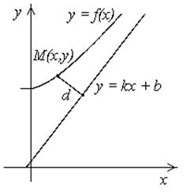
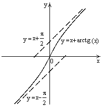
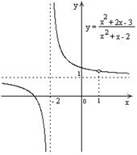

17.1.5. Наклонные асимптоты
Прямая  называется правой
наклонной асимптотой графика функции
называется правой
наклонной асимптотой графика функции  ,
если .
,
если .
называется правой
наклонной асимптотой графика функции ,
если .В этом случае функция  представима
в виде, где
представима
в виде, где
представима
в виде, где Существование асимптоты у
кривой при означает,
что при функция ведет
себя «почти как линейная функция», т.е. отличается от линейной функции на бесконечно малую функцию при .
у
кривой при означает,
что при функция ведет
себя «почти как линейная функция», т.е. отличается от линейной функции на бесконечно малую функцию при .Для того чтобы график функции имел
при наклонную асимптоту , необходимо и достаточно, чтобы
существовали два предела:
имел
при наклонную асимптоту , необходимо и достаточно, чтобы
существовали два предела:1.;
2..

Доказательство:
Необходимость. Пусть график функции при имеет
асимптоту , т.е. для справедливо
, при
 .
.
при имеет
асимптоту , т.е. для справедливо
, при
.Тогда
,
Достаточность. Пусть существуют оба предела  и
и  .
Существование предела для позволяет
утверждать, что разность является
бесконечно малой функцией при . Обозначив эту
разность через
.
Существование предела для позволяет
утверждать, что разность является
бесконечно малой функцией при . Обозначив эту
разность через  , получим , где при
. Это означает, что график функции имеет наклонную асимптоту . Аналогично исследуется случай .
, получим , где при
. Это означает, что график функции имеет наклонную асимптоту . Аналогично исследуется случай .
и .
Существование предела для позволяет
утверждать, что разность является
бесконечно малой функцией при . Обозначив эту
разность через , получим , где при
. Это означает, что график функции имеет наклонную асимптоту . Аналогично исследуется случай .
Найти асимптоты графика функции .
, ,
, график имеет две несовпадающие наклонные
асимптоты: левую и правую .

Построить график функции без
использования производной.
Преобразуем выражение:
, , ,
т.е. , .
График этой функции получается смещением графика  на
две единицы влево, на одну единицу вверх и выкалыванием точки графика с абсциссой
на
две единицы влево, на одну единицу вверх и выкалыванием точки графика с абсциссой
 .
.
на
две единицы влево, на одну единицу вверх и выкалыванием точки графика с абсциссой
.